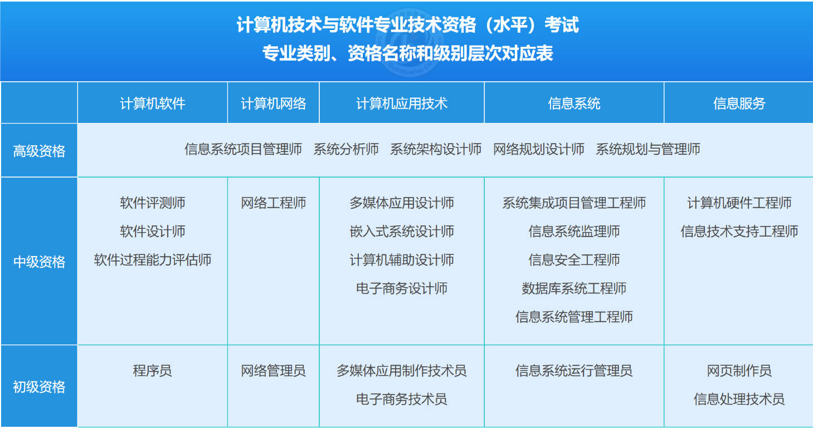

1. 软件评测师介绍
根据中国计算机技术职业资格网的介绍，软件评测师对应计算机软件的中级资格。

btw: 软考虽然是一年两次，但是'软件评测师'一年只有一次，一般是每年的下半年。就2021年下半年的考试为例，软考成绩大概在12月16日出，分数线在2021年1月15日出（分数线不出意外的话，每门科目合格分都是45分）。
2. 考证的实际用途
- 巩固自己软件测试知识;
- 政策加分(比如落户);
- 减税(可参与个人所得税中的继续教育专项附加扣除);
3. 考试题目介绍
软件评测师考试说明：http://www.ruankao.org.cn/platform/details?code=02_14
上午：选择题，75道单选题75分。
一共有75分75个选择题，包括 50分左右的计算机基础知识（计算机组成原理/操作系统/计算机网络/数据结构等）， + 20分的软件测试知识 + 5分的英语。可以趁这个机会来巩固一下软件知识，上午题还是有难度的，大部分人挂都是挂在上午题。
下午题：简答题，五道题，每道题15分。
这个考试的一个bug是，下午题非常非常死板，通过短时间的练习来达到45分以上的概率非常非常大。特别是第一道题和第二道题，拿满分的概率非常非常大，因为题目太死板了。要是前两道题拿满分的话，后面三道题45分只要拿15分就可以及格了。
第一道题是白盒测试，第一问是，100%判定覆盖or条件覆盖，第二问是，线性无关路径and环路复杂度，第三问是，线性无关路径。
第二道题是黑盒测试，无非就是会考一些 等价类边界值划分测试用例。
第三题~第五题就不太确定了，根据以往经验，考的比较多的有 安全测试，Web测试，性能测试，可靠性测试，嵌入式测试，兼容测试。
4. 复习攻略
个人觉得报辅导班没有必要，因为辅导班的目的就是教应试技巧，要是目的是考过的话，刷刷题就能考过，况且这个考试的题库也不是很大。目的还是应该把自己的软件测试知识系统化。
- Step 1: 学习阶段，看 '软件评测师教程'这本书，过一遍，目的是把已有的知识系统化，看完一章，在碎片时间里面，抽空在51CTO的小程序上，把这一章的题目做一遍。遇到错题就在错题本里面记录下来；
- Step 2: 真题阶段，对于上午题，把历年的真题全部打印出来，装订成册（下面的网盘里面有历年真题，某宝有专门打印东西的店铺，也不贵），做一遍。
- Step 3: 真题阶段，对于下午题，挨着做一遍，由于每年都是那几种题型，做一做也就有感觉了，下面的链接里面也有整理好的下午题型；
- Step 4: 巩固阶段，把错题本上所有的错题巩固一遍~
5. 学习资料
参考书目:
- 软件评测师教程
- 软件评测师考试试题分类精解
公众号:
- 软考直通车(获取软考的信息)
在线题目:
- 小程序: 51CTO题库